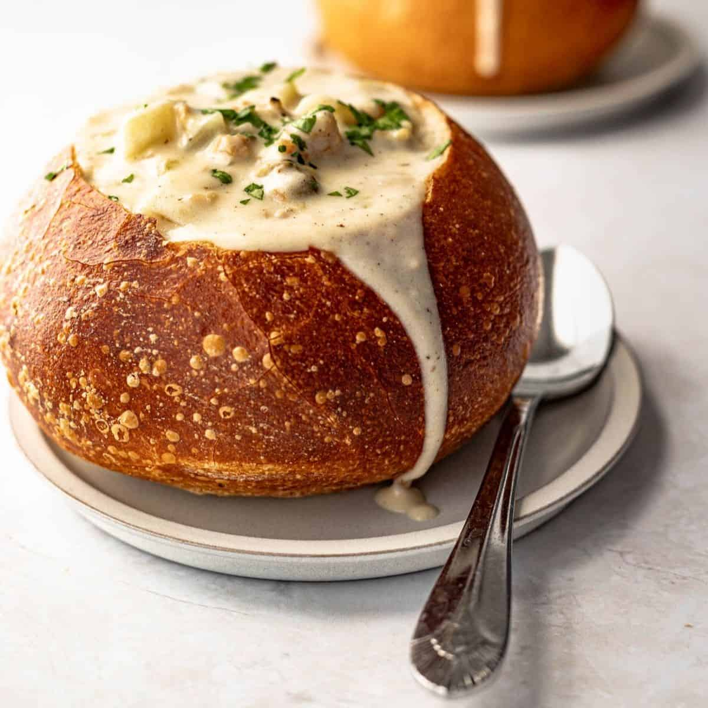

Clam Chowder

Description
Creamy and comforting with subtle hints of clam. The perfect dish for those cold days.
Ingredients
- 6 slices bacon, diced
- 2 stalks celery, diced
- 1 onion, diced
- 1/4 cup butter
- 2 tablespoons all-purpose flour
- 3 (8 ounce) jars clam juice
- 1 quart half-and-half cream
- 4 cups minced clams
- ground white pepper, to taste
Steps
- In a medium skillet over medium heat, cook bacon, celery, and onion until onion is translucent. Remove from heat and set aside.
- In a large saucepan, melt butter over medium heat. Whisk in flour to form a roux, cooking until bubbly. Whisk in 1 jar of clam juice, until smooth. Stir in onion mixture. Pour in half-and-half, stirring constantly. Stir in clams, reduce heat and simmer 30 minutes.
- Season with pepper and serve.